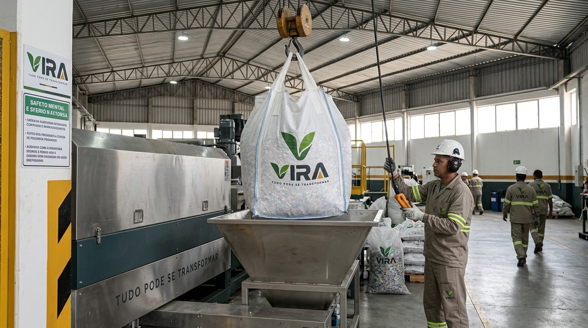
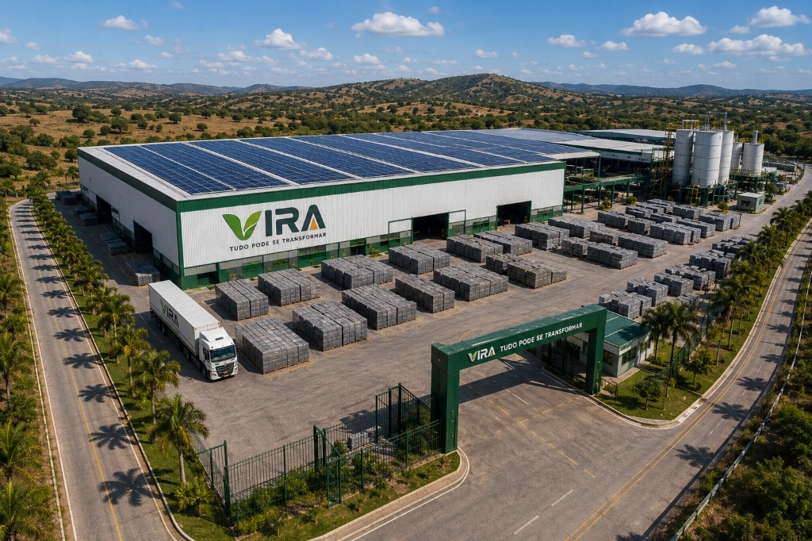
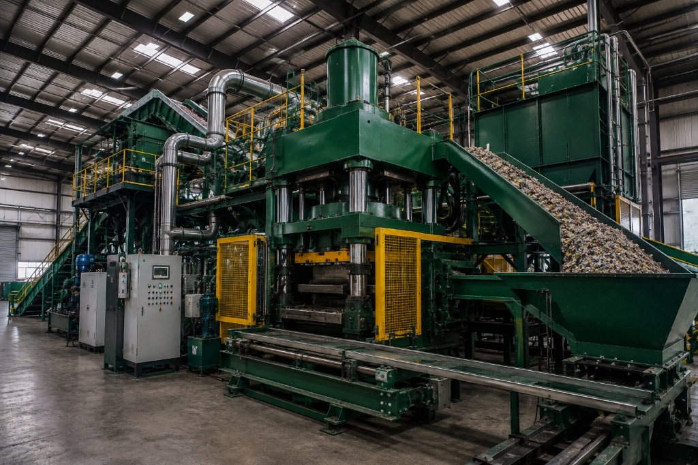
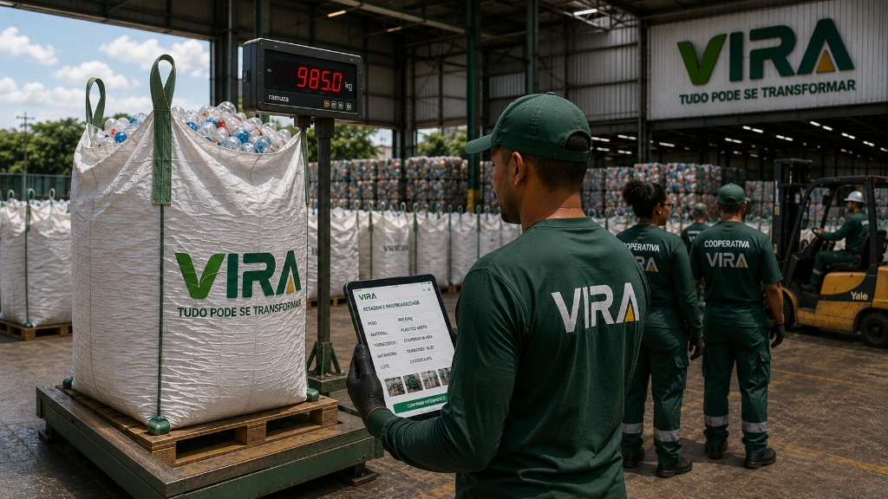

Recepção & Triagem Qualificada
Triagem espectrométrica de polímeros pós-consumo e industriais provenientes de cooperativas auditadas do Agreste pernambucano.
✦ Rastreabilidade na origem


Tecnologia industrial desenvolvida para transformar materiais circulares em soluções para infraestrutura urbana.
A VIRA não é uma empresa de reciclagem convencional. Somos uma indústria de alta precisão que combina ciência de polímeros e engenharia de materiais para redefinir as fundações da infraestrutura pública.
O modelo linear de extração e descarte esgotou a capacidade de resiliência das cidades. A construção civil consome mais de 40% das matérias-primas globais enquanto milhões de toneladas de polímeros nobres sobrecarregam bacias hidrográficas e aterros sanitários.
Ao tratar o resíduo industrial e pós-consumo como uma liga técnica de alto desempenho, a VIRA aplica processos controlados de purificação reológica e termocompressão de alta tonelagem. O resultado são artefatos estruturais imunes à corrosão e formulados para resistir ao tempo.
Controle rigoroso de índice de fluidez (MFI) e separação densimétrica precisa.
Matrizes térmicas robotizadas que eliminam porosidades e garantem fck ≥ 35 MPa.
Passaporte Digital de Produto com auditoria por lote e pegada de carbono mensurada.

Um fluxo contínuo e rigoroso onde cada etapa é instrumentada para entregar conformidade normativa e controle de qualidade lote a lote.

Triagem espectrométrica de polímeros pós-consumo e industriais provenientes de cooperativas auditadas do Agreste pernambucano.

Lavagem a quente com circuito fechado de água, moagem micronizada e formulação de blends poliméricos com aditivos minerais inertes.

Matrizes de prensagem sob vácuo operando a mais de 300 toneladas de força, garantindo homogeneidade e ausência total de bolhas de ar.

Inspeção óptica por lote e gravação a laser do QR Code DPP (Digital Product Passport) contendo laudo reológico e dados de emissões evitadas.
Desenvolvidos para resistir a intempéries extremas, tráfego pesado e agentes químicos, substituindo o concreto e a madeira tradicional.

Cinza Concreto • Encaixe Holandês Autobloqueante

Acabamento Acetinado • Fachadas Ventiladas & Brises

Substituto Direto de Vigas de Madeira e Aço

Flakes Micronizados de Alta Fluidez para Indústria
Soluções desenvolvidas para atender especificações de secretarias de obras públicas, concessionárias e incorporadoras em ambientes de alta demanda mecânica e exposição contínua.

Pavimentação permeável e intertravada com alta capacidade de carga (≥ 35 MPa), garantindo dissipação de calor superior ao asfalto e zero formação de poças.
Especificar Solução em BIM/CAD
Decks resistentes a maresia e umidade contínua, bancos antivandalismo e pergolados que eliminam os custos periódicos de pintura e verniz da madeira convencional.
Especificar Decks & Perfis
Pisos industriais com resistência a impacto, óleos lubrificantes, derivados de petróleo e manobras de empilhadeiras pesadas sem esfarelamento superficial.
Ver Laudo de Carga Pesada (IPT)Dados ensaiados em conformidade com as diretrizes da ABNT e laudos de caracterização mecânica para incorporação imediata em memoriais descritivos de licitações e projetos executivos.
| Propriedade Física / Mecânica | Norma ABNT | Compósito VIRA | Concreto Convencional | Madeira de Lei / Tratada |
|---|---|---|---|---|
| Resistência à Compressão (fck) | NBR 9781 | ≥ 35.0 MPa | 30.0 a 35.0 MPa | Não aplicável |
| Absorção de Água (Impregnação) | NBR 9781 | < 0.05% (Imune) | 4.0% a 6.0% (Poroso) | Alta (> 18%) |
| Resistência a Sais & Maresia | Ensaios de Imersão | 100% Imune | Degradação por cloretos | Apodrecimento acelerado |
| Imunidade a Pragas e Cupins | Laudo Biológico | 100% Inerte | Imune | Suscetível (exige veneno) |
| Pegada de Carbono (Emissões) | ISO 14044 (ACV) | -2.15 kg CO2e / kg | +0.85 kg CO2e / kg | +0.30 kg CO2e / kg |
| Garantia Estrutural Certificada | Garantia Decenal | 10 Anos Estruturais | 5 Anos | 2 a 3 Anos |
Acesse famílias Revit (.RVT/.IFC), pranchas DWG e memoriais descritivos prontos para licitações públicas.
Quantifique em tempo real os benefícios de infraestrutura circular para o seu projeto com base em fatores reais de Análise de Ciclo de Vida (ACV).
9.250 kg
Equivale a mais de 450 mil sacolas e embalagens rígidas pós-consumo regeneradas.
19.888 kg
Crédito de descarbonização direta frente à matriz fóssil de produção virgem.
12.0 m³
Espaço urbano preservado e alívio imediato no passivo ambiental dos aterros municipais.
Nota Metodológica: Fatores configuráveis conforme metodologia ACV (Análise de Ciclo de Vida - ISO 14044) adotada pelo projeto. Fator de abatimento: 2,15 kg CO2e / kg de polímero circular regenerado; densidade média nominal: 18,5 kg de compósito por m² pavimentado (paver 60mm). Acessar Relatório de ACV Auditado (Doc: VIRA-ACV-ALL-010)
Nossa operação industrial integra as metas globais de desenvolvimento sustentável em cada etapa do ciclo produtivo, da inclusão de cooperativas à infraestrutura resiliente.
Meta 9.4: Modernizar a infraestrutura e reequipar as indústrias para torná-las sustentáveis, com maior eficiência no uso de recursos e maior adoção de tecnologias limpas.
✦ Processamento Industrial 100% SolarMeta 11.7: Proporcionar o acesso universal a espaços públicos seguros, inclusivos, acessíveis e verdes, com pavimentação permeável e mobiliário urbano durável.
✦ Redução de Ilhas de Calor e EnchentesMeta 12.5: Reduzir substancialmente a geração de resíduos por meio da prevenção, redução, reciclagem e reuso sistemático em escala industrial.
✦ 0% Petróleo Virgem na LinhaMeta 17.17: Incentivar e promover parcerias eficazes nos setores público, público-privado e com a sociedade civil para qualificação da cadeia de reciclagem no Nordeste.
✦ Remuneração Justa de CooperativasNosso departamento de engenharia atende prefeituras, concessionárias, incorporadoras e escritórios de arquitetura com amostras físicas, ensaios de lote e suporte em memoriais de licitação.
Distrito Industrial de Caruaru — PE, Brasil
engenharia@projetovira.com.br
Atendimento Técnico: Seg a Sex, 08h às 18h